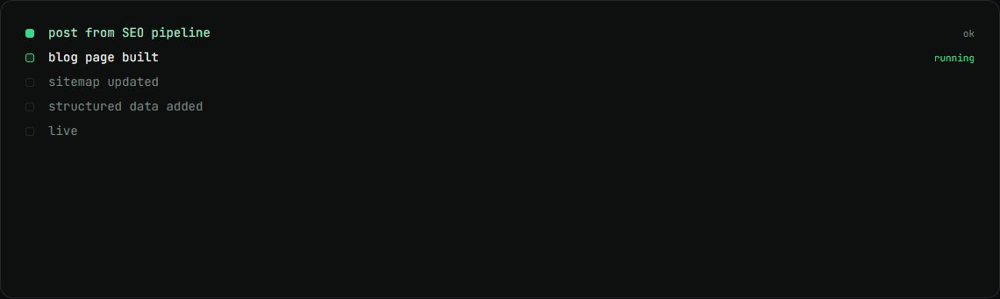
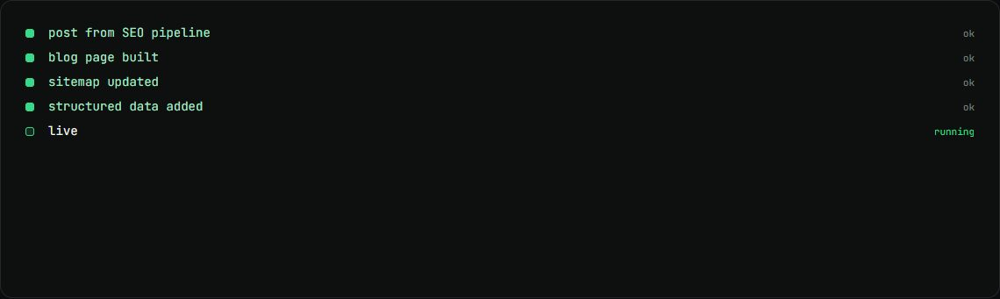

Social Catalyst website
The site for Soch's B2B social media agency. I built its blog and SEO layer.
my role Built the blog and the SEO layer, and replaced the AI photos with my own photography.
The problem
The agency site needed to be found in search and to publish posts from Soch's SEO pipeline, not just look good.
How it works
- All copy comes from one content file, so changes are safe.
- The blog takes posts straight from Soch's SEO pipeline.
- Sitemap, robots, llms.txt and structured data make it readable for search engines and AI assistants.
- Visitors book through a Cal.com popup or request an audit.
What changed
- 17photos replaced with my own
- 4blog posts live
What I built
- The blog.
- Sitemap, robots, llms.txt and structured data.
- Swapped 17 AI-generated photos for my own photography.
Stack
- Next.js
- React
- TypeScript
- Tailwind
- Cal.com
Stills

